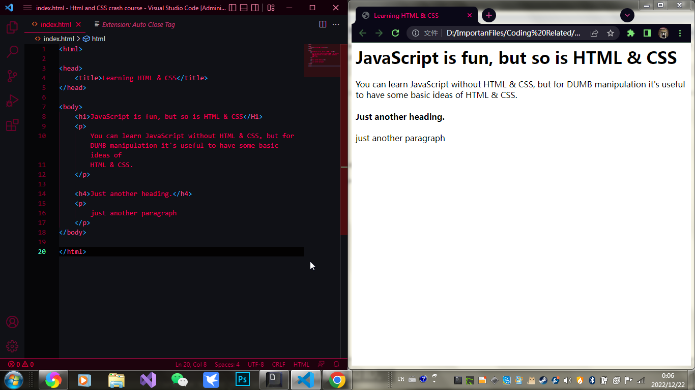

index.html is always the name of the main file in any project
html stands for hyper text markup language
we use it to describe the content of a web page
we right elements, with<>
the main element in every html file is always <html>, close with closing tag like this: </html>
and we always need a <head> </head> and a <body> </body>
some of the elements:
<html> main
<head>head,settings of the page, it's describing the page
<body>body
<title>name of the page
<h1>heading
...
<h6>smaller heading
<p>paragraph
ex:

you can type !, then press tab, it'll automaticly give you a strcture